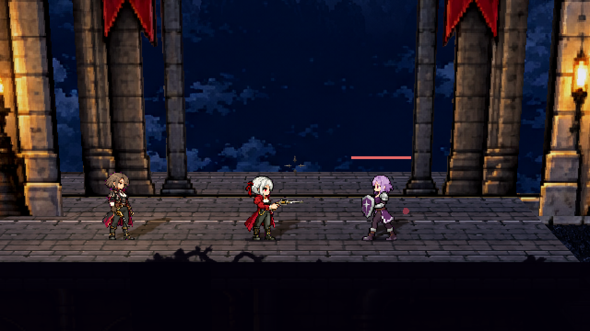
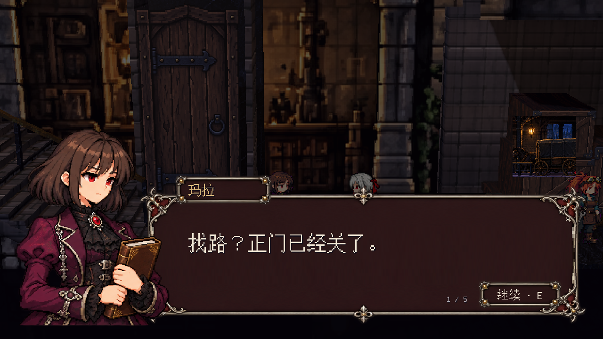

修道院：原图与运行包对照
本页使用2026-10-27修订后Windows内嵌包的实际渲染。原图裁区保持原始像素，截图未经修图、非等比拉伸或锐化处理；点图可打开原尺寸文件。正常视角固定为左轮近镜头，另列三枪近远图。
正常镜头图和三枪远近图为受控站位，不计作通关。两条连续路线由正常键鼠输入脚本完成，未设置无敌、任务完成状态或用传送替代路线。截图与回放读取Windows EXE内嵌资源包，由同版Godot引擎驱动；EXE直接启动的原始帧另列。没有真人试玩。
完整施工图 · 尺度、区域、门锁和站位数据 · 本轮动线、文字与验收记录
全景
右图为审阅用远镜头，1024×384；隐藏跟随镜头的前景遮挡，用于核对五组建筑的轮廓、高低关系和裸露结构断面，不是正常游玩视野。正常镜头图保留实际前景。
打开全景并排图
门楼
门楼尖拱已单独重绘；上层服务通道和拱口按角色尺度调整，石块线条比原图更粗。
打开本区并排图
三枪近远镜头（同一运行包）
装卸庭
主路和下穿沿原图货场组织。门、货箱补绘清晰正面；箱体与侧面是真实3D，后墙沿实际楼梯收边。此处相对旧版避开了NPC重叠站位。
打开本区并排图
三枪近远镜头（同一运行包）
钟楼庭院
巨钟与两侧塔楼关系保留。钟梯为六段短金属梯；接台、栏杆和托座来自实际节点，雕像、凹龛及档案书架继续拆分。
原图裁区 (936, 428, 1117, 533)；按游玩平面投影定位，保留原图比例
正常游玩镜头 · 受控站位 · 1280×720 打开本区并排图
三枪近远镜头（同一运行包）
花棚
玻璃顶、框架、枝干、树冠、前后攀藤、花丛、灯具和室内分别分层。树根与花丛落在真实花槽上，槽面沿用原画；暖光源与可见灯具同位，恢复原图的绿植密度和冷暖围合。新后墙和格栅背梁补齐接缝。树冠像素簇较原图简化。
打开本区并排图
三枪近远镜头（同一运行包）
礼堂
祭台高于主路100px，两侧短阶及地下室入口可走。重绘彩窗、雕像和背饰，玻璃凹进墙内，雕像配真实凹龛与基座。纹样较原图简化，未宣称逐像素复刻。
打开本区并排图
三枪近远镜头（同一运行包）
运输站、档案室与泵房补充视角
连续自动通关与真实游玩画面
录像保留实际输入、战斗、交谈、上下楼和回程。AVI为引擎直接录制；JSONL为位置与输入状态诊断日志，不能替代录像。
| 路线 | 结果 | 证据 |
|---|
| 货梯维修上路 | REBUILD CONTINUOUS REPLAY STAGE RESULT: route=lift complete=true frames=6382 shots=86 deaths=1 resets=1 phase=10 position=(1003.948, 583.9252) | 连续录像 · 诊断日志 |
| 泵房维护下路 | REBUILD CONTINUOUS REPLAY STAGE RESULT: route=maintenance complete=true frames=6562 shots=76 deaths=0 resets=0 phase=15 position=(1035.488, 583.9252) | 连续录像 · 诊断日志 |
连续镜头检查
三枪、近远镜头、横移、跳跃和下落的连续检查录像。各切片之间设置测试起点，切片内保持连续物理输入；此录像不计作通关。
EXE直接启动核对
下图来自EXE自行运行的原始帧序列，不通过外部场景脚本启动。
RecoilRequiem.exe 直接运行 · 第30帧；完整60帧另存于本地原始证据实际对白、发车确认与地图

玛拉：一次完整发言；连续回放中的原始画面隔着货梯门初见维拉；连续回放中的原始画面实际未交接物品与发车确认；连续回放中的原始画面货梯路线通关后，按M打开的已探索地图；连续回放中的原始画面泵房路线通关后的已探索地图；连续回放中的原始画面内嵌资源核对 · EXE直接启动记录 · 完整回归结果 · 实际画片登记 · 构建指纹与证据类型